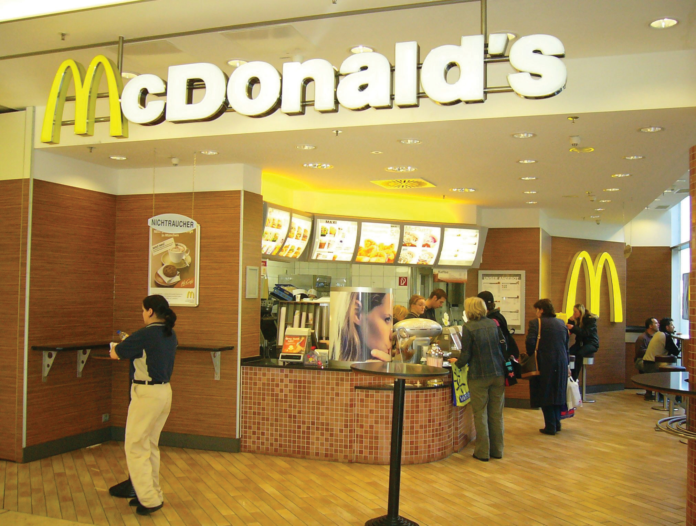
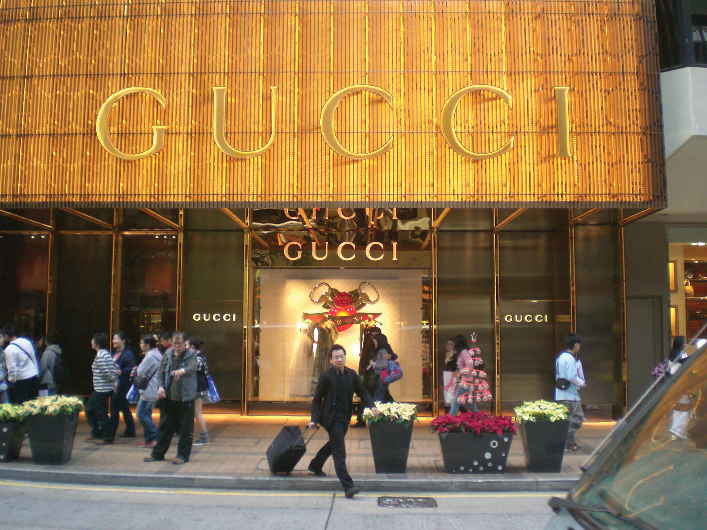
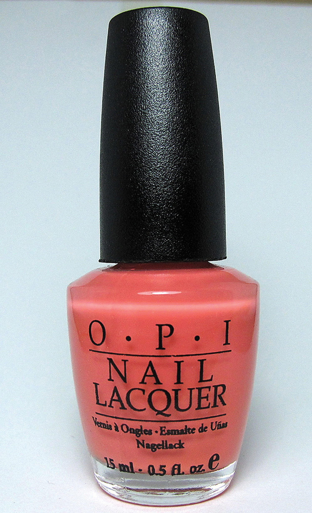
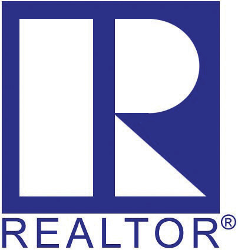
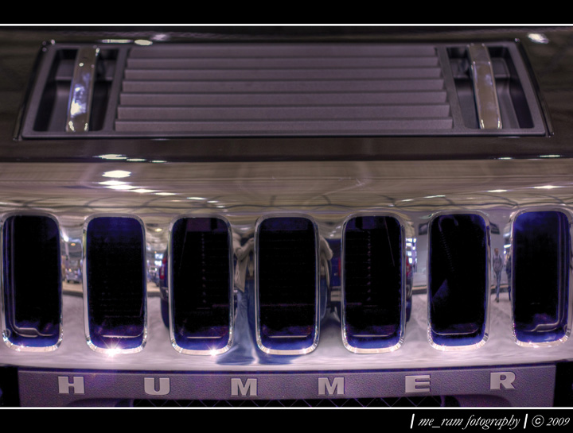
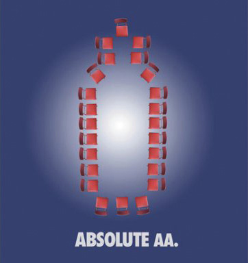

Figure 9.7 McDonald’s, One of the Most Recognized Trademarks in the World
Look at Figure 9.7 "McDonald’s, One of the Most Recognized Trademarks in the World". It’s obviously a McDonald’s restaurant, but can you tell where this restaurant is? Is it in a mall or airport? Is it in Trenton, Toronto, or Tokyo (or, as it turns out, Messestadt Riem in Germany)? Without additional information, it may be impossible to tell. And yet, no matter where you are in the world, if you enter this McDonald’s restaurant, there are certain standards that you expect. You would expect to find a Big Mac on the menu, perhaps Chicken McNuggets and french fries too. You would expect those menu items to taste the same as they do in your local McDonald’s. Perhaps you’d expect a certain level of service from the employees, a certain value proposition for your money, a certain look from the uniform and fixtures, or perhaps a clean restroom. If you walked into this McDonald’s restaurant and found out that it was in fact not McDonald’s, you might be confused. The ultimate goal of trademark law is to prevent this consumer confusion. To prevent any other restaurant from using the name McDonald’s, or from using a logo that looks like a stylized “M,” McDonald’s can trademark both its name and logo (and a lot of other elements of its brand as well). In this section, we’ll examine how trademark law accomplishes this goal.
A trademarkAny logo, mark, sound, or other identifying characteristic that signifies the unique origin of particular goods or services. is any kind of name, logo, motto, device, sound, color, or look that identifies the origin of a particular good or service. Something begins to look like a trademark when a consumer identifies it with a particular origin. For example, someone buying a Diet Coke knows that he or she is getting a carbonated beverage from the Coca-Cola Company. If he or she bought a Diet Cola, on the other hand, there’s no association in the mind with any particular company, so it could be from Coca-Cola, Pepsi, or any number of other companies. The key is that consumer identification with a specific origin. If a consumer thinks of a class of goods rather than one specific origin, then it’s not a trademark. So, for example, when a consumer hears “aspirin,” he or she thinks of a class of goods with no particular origin because aspirin is not a trademark. But if a consumer hears “Bayer,” he or she thinks of a specific aspirin from a specific source, making “Bayer” a trademark.
http://www.uspto.gov/go/kids/kidsound.html
Can sounds be trademarked? Yes! Some sounds are instantly recognizable, such as AOL’s “You’ve Got Mail” and Twentieth Century Fox’s movie opening scene. Click the link to explore other trademarked sounds.
A federal law, the Lanham ActFederal law protecting trademarks., protects trademarks. Unlike copyrights and patents, trademarks can last forever and are not subject to the Constitution’s “limited time” restriction. Since the objective of trademark law is to prevent consumer confusion, the public good is best served by allowing companies to maintain their trademarks as long as consumers associate a trademark with a specific origin. The moment they no longer make that association, however, the trademark ceases to exist.
If you are considering marketing as a career, you will become intimately familiar with the concepts related to branding and the value of branding. At its core, marketing involves the science of relating to consumers, telling them an authentic story about your product and service, and satisfying their wants and needs. Having a brand is essential to carrying out this objective, and it can lead to startling profits. The Apple and iPhone brands, for example, are very strong and yield billions of dollars in profits for Apple. Luxury brands are particularly aware of this phenomenon, as often their brand alone can justify pricing far above a similar good. Gucci, such as this store in Hong Kong (Figure 9.8 "Gucci Store in Hong Kong"), trades on the value of its brand to command premium prices (and margins) in the marketplace. Brands such as Rolex, Hermes, Rolls-Royce, and Bentley have similar business models. These brands are all trademarks—indeed, all brands are either registered trademarks or are trademark-able because they share the common feature of consumer identification. Be careful, though. “Trademark” and “brand” are not interchangeable terms because not all trademarks are brands.
Figure 9.8 Gucci Store in Hong Kong
Trademark law is especially important for luxury brands such as Gucci.
Source: Photo courtesy of Maizeam, http://commons.wikimedia.org/wiki/File:HK_TST_Canton_Road_GUCCI_Shop.JPG.
So what can be a trademark? Obviously, words can be trademarked. When it comes to trademarks, distinctiveness is good. Therefore, an invented word is the best type of trademark. In 1997, for example, when Stanford grad students Larry Page and Sergey Brin were brainstorming names for their new Internet search engine, they settled on the word “Google,” a play on “googol,” which means 1 followed by 100 zeroes. They felt the name reflected their goal to organize the staggering amount of information available on the Internet. On the other hand, regular words can also become trademarks, as long as consumers identify them with a particular source. Amazon, for example, is the name of the world’s longest river, but it’s also the name of an online retailer. Since consumers now identify Amazon.com as an online retailer, the name can be trademarked. Another example is the phrase “You’re Fired” when used in a television program. The phrase was made popular by billionaire Donald Trump and has such lasting recognition now that it’s unlikely any other television show could use that phrase as a central part of its theme.
Consider what would happen if you tried to trademark your name. If your name happens to be Sam Smith, you’d probably have a pretty hard time getting a trademark for your name. If, however, you called your business Sam Smith anyway, and started growing your business so that eventually, over time, consumers began to identify “Sam Smith” as your business, then your name has acquired secondary meaning and can be trademarked. Thus, Sam Adams is a trademark for a beer, Ben & Jerry’s is a trademark for ice cream, and Ford is a trademark for a motor vehicle.
http://www.npr.org/templates/story/story.php?storyId=19227066
Can a sportscaster trademark the phrase “Are you ready to rumble”? Can Paris Hilton trademark the phrase “That’s hot”? As long as the public associates these phrases with a distinctive origin, the answer is yes. Listen to this National Public Radio broadcast for more examples.
Note that when you get a trademark, it’s typically granted for a specific category of goods. The same name can sometimes be used for multiple categories of goods. The name Delta, for example, is a trademark for both an airline and a brand of faucets. Since there is little chance that a consumer will be confused by an airline or faucet brand, trademark law allows these dual registrations. On the other hand, some brands are so strong that they would probably stop registration even for a completely different category of goods. McDonald’s is a good example of this. The McDonald’s trademark is one of the strongest in the world, meaning that it is instantly recognizable. In 1988, for example, hotel chain Quality Inns decided to launch a new line of budget motels called “McSleep.” McDonald’s sued, claiming trademark infringement. McDonald’s claimed that consumers might be confused and believe that McDonald’s owned the hotel chain. A federal judge agreed and ordered Quality Inns to change the name of the chain, which it did, to Sleep Inns.
Trademarks go beyond simply a company’s name or its logo. A color can be trademarked if it’s strong enough to create consumer identification. Pink, for example, is trademarked when used for building insulation by Owens Corning. All other insulation manufacturers must use different colors. Sounds can be trademarked too, such as MGM Studios’ “lion’s roar.” Even a certain “look” can be trademarked if a consumer identifies it with a certain origin. Thus, the distinctive colors, materials, textures, and signage of a Starbucks or T.G.I. Friday’s are considered trade dressThe distinctive and unique look, feel, or shape of a product or service that signifies unique origin. and cannot be copied. A bottle shape can be considered trade dress, too, such as the shape of a nail polish bottle (Figure 9.9 "OPI’s Nail Polish Bottle"). OPI, a nail polish manufacturer, has registered this bottle shape with the U.S. Patent and Trademark Office (USPTO) and is suing other manufacturers that use a similarly designed bottle. Interestingly, courts have been reluctant to grant certain smells trademark protection, even though it can be argued that certain fragrances such as Old Spice or CK One are distinctive. Imagine the chaos that would ensue if one company claimed trademark protection for vanilla or strawberry scents—consumers would ultimately be robbed of choice if that were to happen.
A trademark is not limited to a name or logo used to sell goods. If a company provides a service (as opposed to selling goods), it too can receive trademark protection. In this case it’s called a service markTrademark for an entity providing services, as opposed to goods.. Facebook, for example, is a service mark. A trademark can also be used to demonstrate certification meeting certain standards, such as the Good Housekeeping Seal of Approval. If you study operations management, you’ll learn about the International Organization for Standardization (ISO) and its various standards for quality management (ISO 9000) or environmental quality (ISO 14000). The Forest Stewardship Council (FSC) allows its logo to be used on paper products that come from sustainable forests, while certain foods can be labeled “Organic” or “Fair Trade” if they meet certain standards as established by governmental or nongovernmental organizations. Each of these marks is an example of a certification markA trademark representing a good or service meeting minimum standards established by owner of the certification mark.. Finally, a mark can represent membership in an organization, such as the National Football League, Girl Scouts of America, Chartered Financial Analyst, or Realtor (Figure 9.10 "“Realtor” Certification Mark"). Each of these is known as a collective markA trademark representing membership in a group as established by owner of the collective mark.. The rules that apply to trademarks apply equally to service marks, collective marks, and certification marks.
Figure 9.9 OPI’s Nail Polish Bottle
A bottle’s shape can be trademarked if it is distinctive enough.
Source: Photo courtesy Jessica Ta, http://www.flickr.com/photos/blogggles/4288368487.
If a color or sound can be trademarked, is there anything that cannot be trademarked? The Lanham Act excludes a few categories from trademark registration, mainly for public policy purposes. Obviously, trademarks will not be granted if they are similar or identical to a trademark already granted. If you’re starting a new company, it’s a good idea to make sure that not only is a domain name available for your company’s name, but that the name isn’t already trademarked by someone else. Trademarks also cannot contain the U.S. flag, any government symbol (such as the White House or Capitol buildings), or anything immoral. Trademarks cannot be merely descriptive. (Thus every restaurant is allowed to offer a “Kid’s Meal,” but only McDonald’s can offer a “Happy Meal.”)
Figure 9.10 “Realtor” Certification Mark
Whether or not a region can be trademarked (a geographic indicatorA system whereby names for products, especially foodstuffs, are reserved exclusively for products originating from a particular region., or GI) is the subject of some controversy, especially with our trading partners. “Maine Lobster,” “Napa Valley Wine,” or “Florida Orange Juice,” for example, may indicate to some consumers the origin of a particular lobster or bottle of wine or orange juice, and thus may be of commercial value to distinguish the product from competitors from other regions. For the time being, these foods must come from Maine, California, or Florida to avoid liability under consumer protection statutes for fraud (lying) about their origin. What happens, though, if consumers lose the association with the region? For years, sparkling wine manufacturers in Champagne, France, have fought to prevent this from happening by requiring that only sparkling wine made in the Champagne region be called “champagne.” Now, food producers (especially in the European Union) are seeking similar protection under international trademark law for Feta, Parmesan, Gorgonzola, Asiago, and hundreds of other names.
A trademark is valid as long as consumers believe that the mark is associated with a specific producer or origin. If the mark refers to a class of goods instead, then the trademark can no longer exist. This process is called genericideA former or claimed trademark indicating a general class of goods, not eligible for trademark protection.. Many words today once started as trademarks: furnace, aspirin, escalator, thermos, asphalt, zipper, softsoap, cellophane, lite beer, Q-tip, and yo-yo are all examples of trademarks that are now generic and have therefore lost legal protection. To prevent genericide from occurring, trademark owners must take active steps, often costing millions of dollars, to educate consumers on the importance of using their trademarks properly and to prosecute infringers. For example, when you hear the word “Kleenex,” do you think of a brand of tissue owned by Kimberly-Clark, or do you think of tissues generally? Does “Rollerblade” refer to a brand of in-line skates, or to all in-line skates? In Southern states, does “Coke” refer to a Coca-Cola, or to soft drinks generally? When you run a “Xerox” photocopy, is it on a Xerox photocopier or some other machine? These trademarks, all currently active and worth billions of dollars to their owners, are in danger of becoming generic in the United States. If that happens, the companies will lose control of the marks and the public (and competitors) will be free to use those words just as they use “aspirin” and “yo-yo” today. Xerox has taken many steps to educate the public about its trademark, including running print advertisements in business periodicals. In one of these ads, the text says, “When you use ‘Xerox’ the way you use ‘aspirin,’ we get a headache.”
Trademark infringement occurs when someone uses someone else’s mark, either completely or to a substantial degree, when marketing goods or services, without the permission of the mark’s owner. Obviously, making your own pair of jeans and slapping a “Levi’s” label on it, or making your own handbag and sewing a “Coach” label on it, constitutes trademark infringement. When Apple first released the iPhone, to its embarrassment it found out that “iPhone” was already a registered trademark belonging to Cisco, another company, for a phone used for placing phone calls over the Internet. To avoid trademark infringement liability, Apple had to pay Cisco an undisclosed sum to purchase the trademark. Ford found itself in a similar situation when it released a supercar called the “Ford GT.” Ford made a similar racing car in the 1960s called the “GT 40” but lost control of the trademark after production ceased. Unable to reach agreement with the current trademark owners, Ford settled for releasing the new car as simply the “GT.”
The law also permits trademark owners to sue infringers who use their marks to a substantial degree. For example, when Samsung announced its new smart phone, the Black Jack, the makers of the BlackBerry device sued for trademark infringement. When a software company released a product to eliminate unwanted e-mails called “Spam Arrest,” it was sued by Hormel, makers of Spam canned luncheon meat. When a small coffee shop in Syracuse, New York, opened as “Federal Espresso,” the shipping company FedEx filed a trademark infringement claim.
Even if a trademark owner doesn’t believe a similar use of its mark would lead to any consumer confusion, it can protect its trademark through a concept called dilutionThe use of a famous trademark in a manner intended or designed to cause tarnishment of the mark.. Such was the case when an adult novelty store in Kentucky opened as “Victor’s Secret” (the owner’s name was Victor). The trademark owners of “Victoria’s Secret” filed a dilution suit in response. Traditionally, trademarks are intended to prevent consumer confusion. Dilution permits a trademark owner to stop usage of a similar word or phrase even if consumers aren’t confused. Under dilution concepts, the trademark owner only needs to show that its mark will be diluted or tarnished in some way.
Dilution is controversial in trademark law. When Congress passed the first dilution law in 1995, the Federal Trademark Dilution Act, many felt that Congress had gone too far in protecting trademarks, to the detriment of the public and small businesses. For one thing, the Act only protected “famous” trademarks. It also failed to clearly define “dilution,” and what was required for trademark owners to win a lawsuit. Finally, when the Victor’s Secret case reached the Supreme Court,Moseley v. Secret Catalogue, 537 U.S. 418 (2003)[0].[0] the Supreme Court issued some clarification. The Court ruled that to win a dilution case, a trademark owner had to show that it had suffered actual economic damage from the dilution, not merely the “likelihood” of dilution. This is a high standard for trademark owners to meet, because it means that they (1) have to wait for the diluting mark to hit the market and be used in commerce and (2) must be able to prove that they suffered economic damage from the diluting mark. Unhappy with the Court’s decision, corporations lobbied Congress to pass the Trademark Revision Dilution Act of 2006, which overturns the Moseley case. Now, trademark owners of famous trademarks only need to show a likelihood of dilution before filing a dilution lawsuit.
Companies or persons accused of trademark infringement have several defenses to rely on. The most obvious is arguing that no infringement has occurred because the two marks are sufficiently different that consumers won’t be misled. For example, in 2002 Jeep sued General Motors for infringing on what Jeep called its trademark grill. GM’s Hummer division released the H2 that year, with a similar seven-bar grill. A district court held that there was no trademark infringement because the grills were too dissimilar to cause consumer confusion. Look at the Hummer H2 grill (Figure 9.11 "Hummer H2 Grill") and the Jeep grill (Figure 9.12 "Jeep Grill"). Do you think there is a chance of consumer confusion?
Figure 9.11 Hummer H2 Grill
Source: Photo courtesy of Ramchandran Maharajapuram, http://www.flickr.com/photos/me_ram/3157719487.
Figure 9.12 Jeep Grill
Source: Photo courtesy of 3obryans, http://www.flickr.com/photos/3obryans/1017233.
Another defense is fair useThe right of the public, under circumstances laid out in copyright and trademark law, to use protected intellectual property without permission.. The Lanham Act prohibits the use of someone else’s trademark when selling goods. It’s not uncommon to see various items such as laptop computers, telephones, soda cans, or other foods with their labels covered by stickers or blurred out on television shows and movies because of the trademark law. On the other hand, what if a company wanted to mention a competitor’s product to draw a comparison with its own product? This is called comparative advertising, and it’s considered fair use. Honda, therefore, is free to claim that its “Honda Accord is better than the Ford Taurus” in its advertising even though Ford and Taurus are both trademarks owned by Ford Motor Company.
The First Amendment also recognizes the use of parody, comedy, or satire as fair use. Comedy skits on television that make fun of, or use, company logos are an example of this fair use. Canadian nonprofit Adbusters, for example, claims to be an organization seeking to advance “a new social activist movement in the information age.” Part of its work involves making fun of corporations and consumer spending, sponsoring “Buy Nothing Day” as an antidote to the annual holiday spending season. Making fun of corporations also involves spoofing their commercial messages, as the ad in Figure 9.13 "A Parody of the Well-Known Absolut Vodka Print Ads" illustrates. Although the ad undoubtedly infringes on a trademark, it is considered fair use because of the social commentary and satire behind its message.
Figure 9.13 A Parody of the Well-Known Absolut Vodka Print Ads
Source: Photo courtesy of Adbusters, https://www.adbusters.org/gallery/spoofads/alcohol/absolutaa.
An interesting aspect of trademark infringement arises through the use of domain names on the Internet. The practice of cybersquatting (or domain name squatting)The practice of registering Internet domain names for the sole purpose of selling the name to its rightful trademark owner. arises when a company registers a domain name containing a famous trademark in hopes of selling that trademark to its rightful owner for a large profit. The practice arose in the early days of the Internet, when domain name registration took place on a first-come, first-served basis. There is nothing wrong with registering a domain name for a generic word such as “shoes.com,” but incorporating a registered trademark into the domain name, for purposes of selling it later, is considered cybersquatting. This practice was made illegal in 1999 with the passage of the Anticybersquatting Consumer Protection ActA federal law outlawing cybersquatting.. It is only illegal, however, if the domain name is registered to make a profit through later sale. It is not illegal if someone registers the domain name in “good faith.” A good example is the domain name registered by Canadian teenager Mike Rowe in 2003. An avid computer user, he registered “mikerowesoft.com” as a domain name. Software giant Microsoft launched legal proceedings against him, claiming violation of the cybersquatting statute and trademark infringement. Rowe’s defense was that the Web site merely reflected his name and his interest in computer programming and software and was being used for that purpose. After heavy negative publicity, Rowe and Microsoft settled the case with Microsoft taking control of the domain. Another example surrounds the Nissan.com domain. Uzi Nissan, a computer storeowner, had owned the domain for years before Nissan Motors attempted to gain ownership of the domain. Since the domain was registered in good faith, no cybersquatting has occurred. The First Amendment is also a defense to cybersquatting. Web sites run by consumer activists who seek to criticize or parody companies, such as “fordreallysucks.com” or “fordlemon.com” or “peopleofwalmart.com” are not cybersquatting in spite of their use of trademarks.
Trademarks are anything that identifies the unique origin or goods or services. Trademarks are granted under federal law by the U.S Patent and Trademark Office and can last forever. When a trademark is no longer associated with a specific origin, it becomes generic and loses legal protection. Trademark owners can take legal action against infringement and dilution of their marks. Fair use of trademarks includes comparative advertising and parody. Trademark protection extends to the Internet, where mark owners can prevent bad faith domain name squatting.